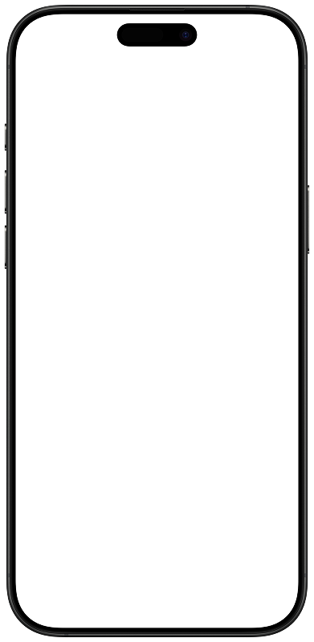

01
Start your day
Coffee Nap gives you a clear overview of your caffeine intake from the moment you start your day.
Language: C#, .NET, MAUI
Tools: Visual Studio, VS Code, Figma
Timeline: 33 days
CoffeeNap is a caffeine intake tracker built with .NET MAUI. Log coffee, tea, and energy drinks, estimate their caffeine content, and explore your consumption history through daily summaries and calendar statistics.
Android is the primary platform. CoffeeNap is developed primarily for Android, while its .NET MAUI foundation also allows it to run on iOS, macOS (via Mac Catalyst), and Windows.
Your data stays on your device in a local SQLite database. No account or backend service is required.
Coffee Nap gives you a clear overview of your caffeine intake from the moment you start your day.
Add coffee, tea or an energy drink in just a few taps and keep your daily intake up to date.
See how much caffeine you consume throughout the week and understand your daily patterns.
All your data is stored locally on your device. No account, no cloud storage, no unnecessary tracking.


Guided drink logging - enter preparation details for home-brewed coffee, choose a coffee drink and serving size when drinking out, or log tea and energy drinks.
Caffeine estimates - calculations account for coffee bean type, brewing method, dose, or serving size, depending on the drink.
Recipe reuse - quickly repeat your last saved recipe with a recalculated estimate.
Daily overview - view caffeine intake, progress against the app's daily limit, and a breakdown by drink category.
Calendar and statistics - browse consumption by day and review weekly and monthly summaries.
Consumption history - review saved entries and delete individual records.
English and Russian - select your preferred interface language in settings.
Local data controls - delete your profile, settings, and consumption data from within the app.
CoffeeNap was my first serious software project built around a structured development process. Before development started, we created a plan, defined the main functionality, and divided responsibilities between two developers.
I was responsible for the technical side of the project: application logic, navigation, data handling, database integration, calculations, and internal functionality. The visual design and XAML were handled by another developer. For collaboration and version control, we used GitHub, which I learned specifically for this project.
The application design was created in Figma. We also used Notion was used to plan features, logic, and development tasks.
We chose .NET MAUI as the main framework. I had no previous practical experience with it, so I had to learn the technology during development by reading documentation, testing different approaches, and using AI tools as an additional assistant.
The main problem was the lack of practical project experience. Many architectural, navigation, storage, and performance-related problems appeared only during development and had to be solved in real time.
CoffeeNap/
Configuration/ Dependency injection registration
Controls/ Reusable UI controls and drink-entry steps
Data/ SQLite database initialization and migrations
Helpers/ Formatting, validation, and UI utilities
Models/ Profiles, settings, drinks, recipes, and statistics
Platforms/ Platform-specific startup and lifecycle code
Resources/ Images, fonts, styles, and localization
Services/ Calculations, persistence, navigation, and statistics
ViewModels/ Presentation state and commands
Views/ Application pages
docs/ Calculation and Android release documentation
scripts/ Android publishing script
CoffeeNap.slnx Solution file
CoffeeNap estimates caffeine from the information entered in the drink flow:
| Drink | Calculation basis |
|---|---|
| Home-brewed coffee | Coffee dose, bean type, and brewing-method extraction factor |
| Coffee outside the home | Estimated espresso shots for the selected drink and serving size |
| Tea | Tea type and dry tea amount |
| Energy drink | Drink volume and the app's default caffeine concentration |
Saved entries retain the caffeine estimate shown when they were recorded. History and statistics use that saved value.
Detailed documentation: Git Hub
You can try CoffeeNap by installing the prebuilt Android APK.
1. Go to the latest GitHub Release .
2. Download the .apk file from the
Assets section.
3. Open the downloaded APK on your Android device.
4. If prompted, allow installation from unknown sources for the browser or file manager you used to download the APK.
5. Install and launch CoffeeNap.
Note: CoffeeNap is not distributed through Google Play, so Android may display a warning when installing the APK manually.
The APK is provided as a signed release build for demonstration and testing.